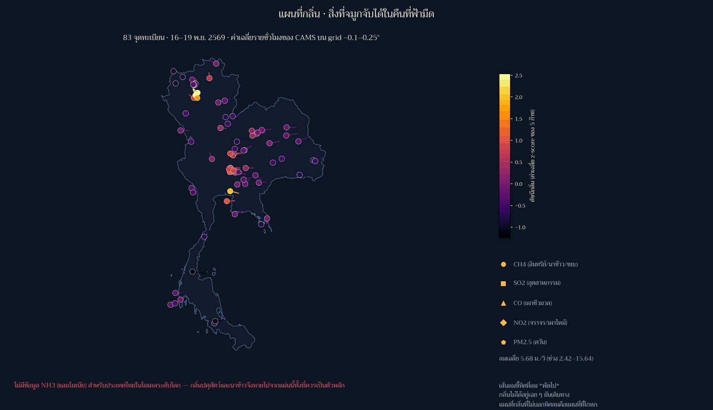
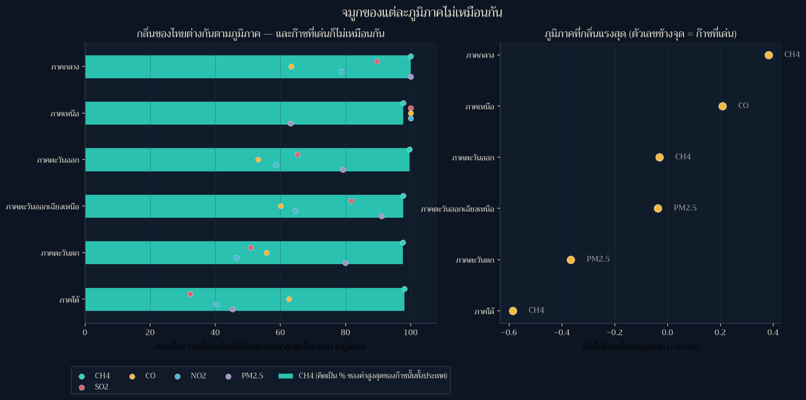
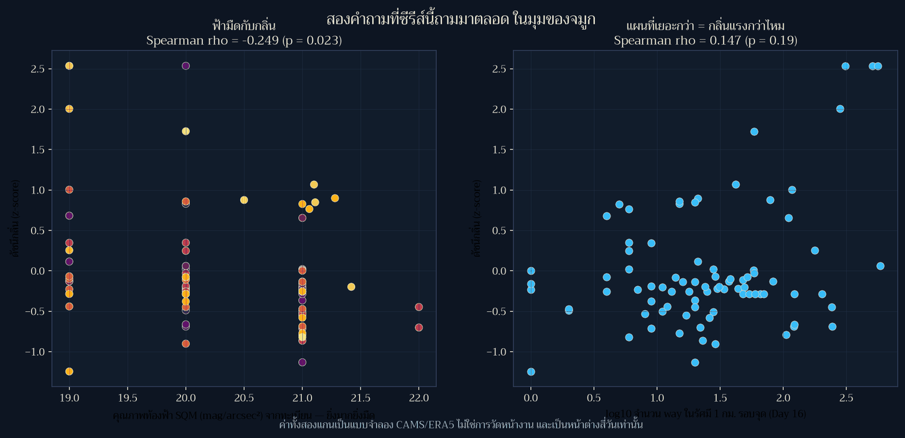

Day 19 · Senses: Smell — แผนที่กลิ่นของไทยจากก๊าซห้าชนิดที่ CAMS โมเดลไว้ พร้อมทิศลม เพราะกลิ่นไม่ได้อยู่เฉย ๆ

โจทย์ทางการวันนี้คือ “How do you map things which your nose can sense? What does a smelly map look like?” (หัวข้อ Senses: Smell — ดึงข้อความมาจากหน้า 30daymapchallenge.com อ่านสดวันที่ 20 พ.ย.) แผ่นนี้เขียนและเผยแพร่คืนวันที่ 19 ต่อเช้าวันที่ 20 ช้ากว่าวันของโจทย์ไม่กี่ชั่วโมง
คำตอบสั้น: แผนที่กลิ่นที่ซื่อสัตย์ต้องวาด ก๊าซ กับ ลม พร้อมกัน เพราะจมูกจับโมเลกุลที่ถูกพัดมา ไม่ใช่จับตำแหน่งของแหล่งกำเนิด ผมจึงไม่ถามว่า “ที่ไหนมีของเหม็น” แต่ถามว่า ที่ which จุดที่เรานอนดูดาวยามวิกาล อากาศที่พัดมาถึงตัวเราพาโมเลกุลอะไรมา
ที่มาของแผนที่
Overpass ล่มอีกครั้งคืนนี้ (502 ทั้ง query) ผมจึงไม่ใช้แหล่งกำเนิดกลิ่นจาก OSM แต่ใช้แบบจำลองบรรยากาศที่เรียกได้ตรง ๆ ว่า CAMS ผ่าน Open-Meteo Air Quality API กับลมจาก ERA5 ผ่าน Open-Meteo Archive API ที่ 83 จุดทะเบียน ช่วง 16–19 พ.ย. 2569 (96 ชั่วโมง)
| ก๊าซ | ทำไมมันคือ “กลิ่น” | เฉลี่ย 83 จุด (µg/m³) | ต่ำสุด | สูงสุด |
|---|---|---|---|---|
| CH4 (methane) | การย่อยสลายอินทรีย์ — นาข้าว บ่อขยะ คอกสัตว์ | 1,403.741 | 1,362.969 | 1,541.552 |
| SO2 (sulphur dioxide) | อุตสาหกรรม เชื้อเพลิงกำมะถัน กลิ่น “ไข่เน่า” | 3.527 | 0.716 | 9.780 |
| CO (carbon monoxide) | การเผาชีวมวล — ไร่อ้อย ฟาง ในฤดูเก็บเกี่ยว | 250.242 | 137.438 | 1,025.594 |
| NO2 (nitrogen dioxide) | จราจร การเผาไหม้อุณหภูมิสูง กลิ่น “คม” หลังฝน | 7.476 | 0.293 | 24.826 |
| PM2.5 | ควัน ซึ่งพาอนุภาคที่จมูกรับได้พร้อมปอด | 9.717 | 4.566 | 22.368 |
ดัชนีกลิ่น = ค่าเฉลี่ย z-score ของห้าก๊าซนี้ (z-score ทำให้ก๊าซที่หน่วยต่างกันมาบวกกันได้) และ ก๊าซเด่น ของแต่ละจุดคือก๊าซที่มี z-score สูงสุดที่จุดนั้น ไม่ใช่ก๊าซที่มี µg/m³ สูงสุด — ข้อนี้สำคัญ เพราะ CH4 มีพื้นหลังระดับพันหน่วย ส่วน SO2 มีหลักหน่วย ถ้าเทียบดิบ ๆ ทุกจุดในประเทศจะ “เด่น CH4” ทั้งหมด ซึ่งเป็นคำตอบที่ผิดจากคำถามที่ผิด (ผมทำผิดแบบนี้จริง ๆ ในรอบแรก แล้วแก้ — ดูหัวข้อ “สิ่งที่จับได้ระหว่างทาง” ด้านล่าง)
ผลลัพธ์

กลิ่นของไทยในสัปดาห์นั้นเป็นกลิ่นอะไร — นับจาก 83 จุด
| ก๊าซที่เด่น | จำนวนจุด |
|---|---|
| CO (เผาชีวมวล) | 25 |
| PM2.5 (ควัน) | 20 |
| CH4 (อินทรีย์/นาข้าว/ขยะ) | 16 |
| SO2 (อุตสาหกรรม) | 12 |
| NO2 (จราจร/เผาไหม้) | 10 |
ดัชนีกลิ่นทั้งประเทศ: ต่ำสุด −1.2448 · มัธยฐาน −0.1997 · สูงสุด 2.535 ลมเฉลี่ย 5.682 ม./วิ (ช่วง 2.419–15.636) — และเส้นลมในแผนที่ชี้ทิศที่ลมพัดไป ไม่ใช่ทิศที่จุดนั้นหันไป
ภูมิภาคที่จมูกต่างกัน

| ภูมิภาค | จุด | ดัชนีกลิ่นเฉลี่ย | ก๊าซเด่น | CO เฉลี่ย | PM2.5 เฉลี่ย | ลมเฉลี่ย |
|---|---|---|---|---|---|---|
| ภาคกลาง | 6 | +0.383 | CH4 | 223.6 | 12.35 | 5.26 |
| ภาคเหนือ | 23 | +0.208 | CO | 353.0 | 7.79 | 3.07 |
| ภาคตะวันออก | 6 | −0.030 | CH4 | 187.5 | 9.78 | 5.63 |
| ภาคตะวันออกเฉียงเหนือ | 37 | −0.036 | PM2.5 | 212.2 | 11.24 | 6.93 |
| ภาคตะวันตก | 4 | −0.366 | PM2.5 | 196.5 | 9.87 | 5.27 |
| ภาคใต้ | 7 | −0.586 | CH4 | 220.9 | 5.59 | 8.27 |
สองบรรทัดที่อธิบายตัวเอง: ภาคเหนือมี CO สูงสุด (353.0 เทียบค่าเฉลี่ยทั้งประเทศ 250.2) พร้อมลมเบสุด (3.07 ม./วิ) — คือสูตรของคืนที่กลิ่นค้างอยู่นาน ส่วน ภาคใต้มีดัชนีกลิ่นต่ำสุด (−0.586) กับลมแรงสุด (8.27 ม./วิ) — กลิ่นไม่ค้าง
กลิ่นกับฟ้า: สัมพันธ์กันจริง (และทิศทางถูก)

Spearman(ดัชนีกลิ่น, SQM) = −0.249 (p = 0.023) — SQM สูงกว่า = ฟ้ามืดกว่า เครื่องหมายลบแปลว่า ที่ไหน ฟ้ามืดกว่า อากาศที่วัดได้มีกลิ่นน้อยกว่า อย่างมีนัยสำคัญทางสถิติ นี่คือครั้งแรกในซีรีส์ที่คำถาม “ฟ้ามืดกับสิ่งรอบตัว” ได้คำตอบที่ผ่านเกณฑ์นัยสำคัญ (Day 16 ได้ −0.199 p = 0.072, Day 17 ได้ −0.199 เช่นกัน — คราวนี้ p ต่ำกว่า 0.05)
ส่วน Spearman(ดัชนีกลิ่น, จำนวน way ใน OSM) = 0.147 (p = 0.186) — ไม่มีความสัมพันธ์ แปลว่า “แผนที่เยอะ” ไม่ทำให้กลิ่นแรงขึ้นในสัปดาห์นี้ และผมรายงานตัวเลขที่ไม่มีความหมายนี้ไว้ เพราะมันคือคำตอบของคำถามที่ตั้งไว้ ไม่ใช่เลือกเฉพาะคู่ที่ตอบ
สิ่งที่จับได้ระหว่างทาง (สองเรื่อง)
- คำถามผิดให้คำตอบที่ผิดอย่างมั่นใจ — เวอร์ชันแรกผมจัดกลุ่มภูมิภาคด้วยค่า µg/m³ ดิบ แล้วได้ผลว่า ทุกภูมิภาค มี “ก๊าซเด่น” เป็น CH4 ทั้งหกกลุ่ม ซึ่งฟังดูสมเหตุสมผลมาก แต่เป็นคำตอบของคำถามที่ไม่มีอยู่จริง (CH4 พื้นหลัง 1,400 หน่วยชนะ SO2 ที่ 3 หน่วยเสมอ) พอกินค่าเป็น z-score จึงเห็นจริงว่าเหนือคือ CO กลางคือ CH4 ตะวันออกเฉียงเหนือคือ PM2.5
- แอมโมเนียไม่มีข้อมูล — และนั่นคือเรื่องใหญ่ของแผ่นนี้ — NH3 คือกลิ่นหลักของนาข้าว คอกสัตว์ และบ่อขยะ ซึ่งเป็นแหล่งที่ควรเจอที่สุดในไทย แต่ CAMS ระดับโลกคืนค่า
nullทั้ง 96 ชั่วโมงที่ทุกจุดในไทย ผมจึงวาดแผนที่กลิ่นที่ ขาดกลิ่นที่สำคัญที่สุดไป และเขียนไว้บนหัวแผนที่แทนที่จะเงียบ
วิธีทำแบบย่อ
tools/collect_day19_smell.py— เรียก Open-Meteo Air Quality (10 ตัวแปร, รายชั่วโมง, 16–19 พ.ย.) และ Archive (wind_direction_10m, wind_speed_10m) ที่ 83 จุด เก็บแคชรายจุดในcache/day19/- แปลงแต่ละก๊าซเป็น z-score ข้าม 83 จุด →
smell_index= ค่าเฉลี่ยห้า z,signature= ตัวที่สูงสุด - ทิศลมเฉลี่ยแบบ เวกเตอร์ (แยกองค์ประกอบ u/v ถ่วงด้วยความเร็วแล้ว atan2) — เฉลี่ยเชิงมุมตรง ๆ จะพังเมื่อลมพัดสลับทิศ
- เทียบกับซีรีส์: SQM จากทะเบียน,
waysจาก Day 16, แล้ว Spearman ทั้งคู่ - วาดสามภาพ: แผนที่ + เส้นลม, เทียบภูมิภาค (normalise รายก๊าซ), และ scatter สองคำถาม
- ตรวจ: assert ว่าก๊าซหลักห้าตัวไม่มีค่าว่าง, assert ว่า mean(z) ≈ 0, assert ว่า ต้องบันทึก NH3 ใน
no_data_variables,lint_thai, สแกน unicode
ข้อจำกัดที่ต้องบอกตรง ๆ
- ทั้งหมดคือแบบจำลอง ไม่ใช่การวัด CAMS resolution ~0.1° (≈ 11 กม.) และ ERA5 ~0.25° จุดทะเบียนหลายจุดที่อยู่ใกล้กันจึงได้ค่า ซ้ำกัน — ผมเก็บ
grid_aq/grid_windของ grid cell ที่ใช้ไว้ทุกแถวใน CSV เพื่อให้ตรวจสอบได้ - ไม่ใช่หน่วยกลิ่นจริง ในอุตสาหกรรมเขาวัด ou/m³ (odour units) ซึ่งต้องวัดหน้างาน
smell_indexเป็นเพียงการจัดอันดับเชิงเปรียบเทียบระหว่าง 83 จุดในช่วงเวลาเดียวกัน - หน้าต่างสี่วัน 16–19 พ.ย. คือสภาพอากาศเฉพาะสัปดาห์ ถ้าเปลี่ยนสัปดาห์ (โดยเฉพาะช่วงเผาไร่อ้อยกุมภาพันธ์–เมษายน) ลำดับภูมิภาคจะเปลี่ยน
- ไม่มี NH3 ตามที่บอก และ
dustเป็น 0 ทุกจุดทุกชั่วโมงในช่วงนี้ - ไม่มีแหล่งกำเนิดกลิ่นจาก OSM เพราะ Overpass ไม่ตอบคืนนี้ — แผ่นนี้จึงตอบ “อากาศพัดอะไรมา” ไม่ใช่ “อะไรอยู่ใกล้ ๆ” (สองคำถามนี้ต่างกัน และผมไม่ได้ทำอันหลัง)
- p = 0.023 ที่ n = 83 ไม่ได้แปลว่า “ฟ้ามืดทำให้ไม่มีกลิ่น” — อาจมีตัวแปรร่วม เช่นภาคใต้ที่ฟ้ามืดและลมแรงพร้อมกัน ผมรายงานสหสัมพันธ์ ไม่ได้สรุปสาเหตุ
ไฟล์ประกอบ
- day19_smell.png — แผนที่กลิ่น 83 จุด พร้อมเส้นลมและก๊าซที่เด่น
- day19_regions.png — เทียบหกภูมิภาค (normalise รายก๊าซ) และดัชนีกลิ่นเฉลี่ย
- day19_smell_vs_dark.png — กลิ่นกับ SQM, กลิ่นกับจำนวน way (Day 16)
- day19_smell_sites.csv — ทุกจุด: ค่าก๊าซห้าชนิด, z-score, ดัชนี, ก๊าซเด่น, ทิศ/แรงลม, grid ที่ใช้
- day19_by_region.csv — สรุปตามภูมิภาค
- day19_stats.json — ตัวเลขทุกตัว +
metric_definitions+unavailable(NH3/dust/grid)


บทเรียน
- อย่าเทียบตัวเลขข้ามหน่วย — “ก๊าซที่เด่น” ด้วย µg/m³ ดิบคือกับดักที่ทำให้ทั้งประเทศตอบ CH4 และมันดูถูกจนผมเกือบปล่อยไป การแปลงเป็น z-score ไม่ใช่เทคนิคสวยหรู มันคือวิธีเดียว ที่ถามคำถาม “อะไรเด่น เมื่อเทียบกับจุดอื่น” ได้
- แผนที่กลิ่นต้องบอกทิศลม — จุดที่กลิ่นแรงกับจุดที่ลมพัดผ่านกลิ่นแรงเป็นคนละที่กัน เส้นลมในแผ่นนี้จึงเป็นข้อมูล ไม่ใช่ของตกแต่ง และลมเฉลี่ยแบบเวกเตอร์ต่างจากเฉลี่ยเลขคณิต (ลม 350° กับ 10° เฉลี่ยเลขคณิตได้ 180° ซึ่งผิดไปครึ่งรอบ)
- ข้อค้นพบที่ผ่านนัยสำคัญครั้งแรกของซีรีส์ — ฟ้ามืดกับอากาศสะอาดกว่ากัน (Spearman −0.249, p = 0.023) สอดคล้องกับ Day 16/17 ที่ว่าที่มืดที่สุดคือที่ที่คนอยู่น้อยที่สุด แต่ผมยังระวัง: n = 83 จุดที่เลือกโดยทะเบียน ไม่ใช่ตัวอย่างสุ่มของประเทศไทย
- ข้อมูลที่ไม่ได้มาต้องพูดดัง ๆ — NH3 หายไปทั้งคอลัมน์ และนั่นทำให้แผนที่นี้ ไม่ใช่ แผนที่กลิ่นของนาข้าวและคอกสัตว์ทั้งที่ควรเป็น ผมเขียนไว้บนหัวแผนที่ เพราะแผนที่ที่เงียบเกี่ยวกับช่องว่างของตัวเอง คือแผนที่ที่ทำให้คนตัดสินใจผิดอย่างมั่นใจ